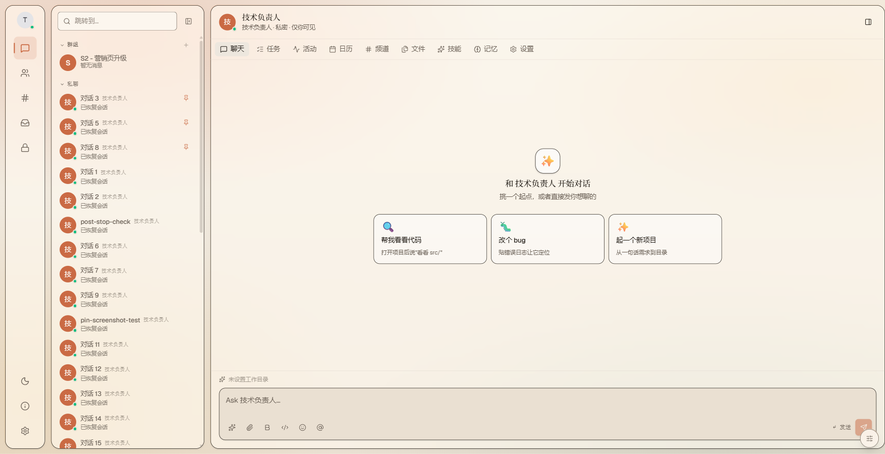
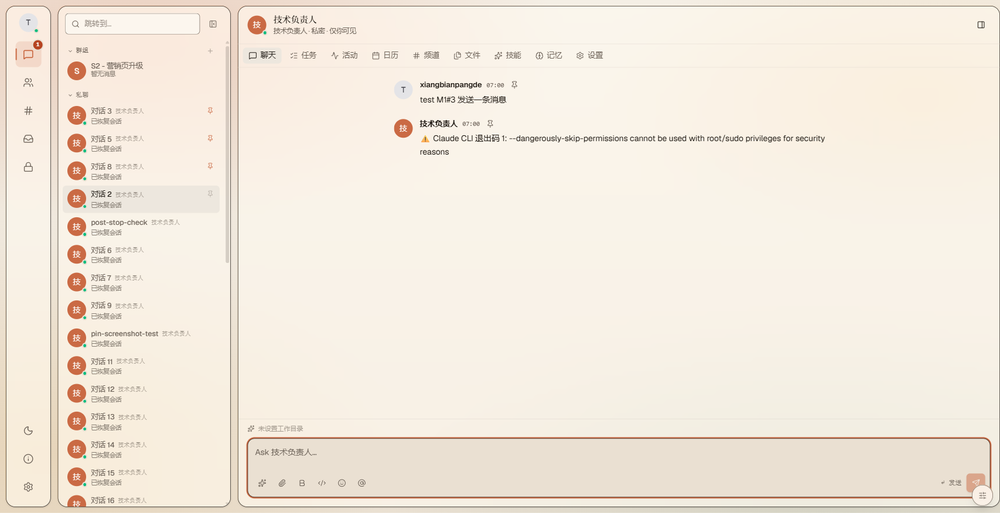
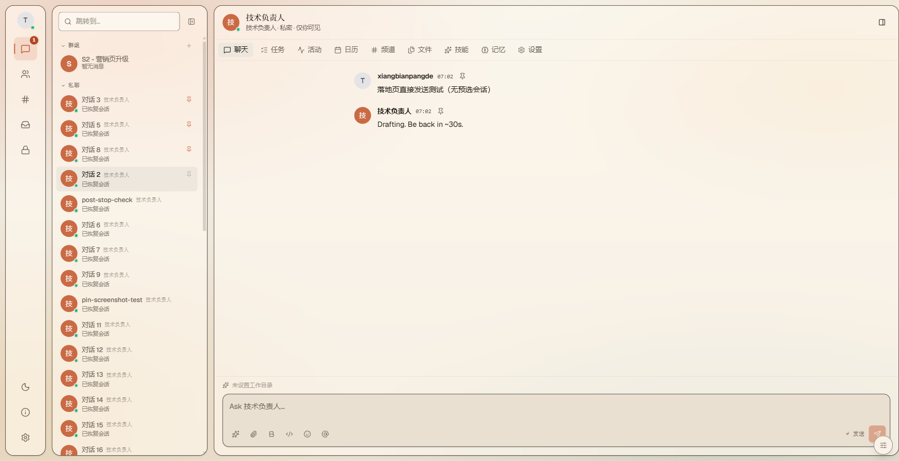
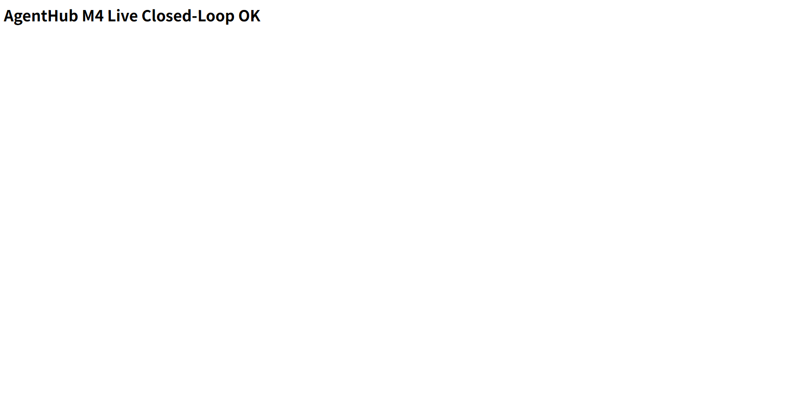

v2.0 真实验证 + Bug 修复报告
承接 test-report-2026-06-10-v2-status.html §9 五步计划，把「代码已落但单测/真实接口未跑」的诚实缺口逐一补齐 —— 过程中查出并修复 M4 部署 API 完全不可用的两个真 bug，新增 6 套单测、修复 12 例历史 stale 测试（后端套 0 失败），并修掉 M1#3「落地页点发送静默丢弃」。所有结论按证据分级，附 4 张真浏览器截图，绝不补拍不存在的界面。
四个数字看完整盘
本会话不是「再写代码」，而是「把上一会话写的代码真跑起来验证」—— 真跑才查出 M4 整条 API 不可达。所有提交在本地，未推（遵守「别擅自 push」）。
最关键发现：M4 之前根本不可用
「编译过 + pytest 绿」都查不出的两个真 bug：① 部署路由从未注册（全 404）；② 后台任务复用请求 session 致永久卡 queued。真跑 live 才暴露，已修 + 闭环验证通过。
后端测试：12 failed → 0 failed
6 套新单测 + 12 例历史 stale 测试对齐现设计，全绿。
四张真浏览器截图
Playwright 驱动 Chromium 跑 vite(:3000) + 后端容器(:8200)。每张都是真实运行界面，非补拍。




/preview/{id}/ 渲染出部署的静态站点。配合 curl 实测：/preview/{id}/index.html 返 200 + 真实 HTML，package 返真 zip。5 步计划逐步落地
① 起数据库 + 跑迁移 完成
postgres/redis 在跑；DB alembic_version=0024（即 head，无 pending），sessions.archived 列 + ix_sessions_archived 索引已在库。
验证手段：psql \d sessions + alembic_version 查询
② 补 6 套单测 完成 · 全绿
归档持久化 / 路径穿越 + 静态托管 / 非 git 降级 / pptx 三路径 / 启发式抽取；并修 4 例被 M4 异步改造打破的 deploy 回归。
21 个新用例 + deploy 16 例全绿
③ 起前端 + M1#3 E2E 部分 → 修复
vite(:3000) + 后端(:8200) 真浏览器：M1#1 验过 + 截图。M1#3 一度判「阻塞」（实为测试方法问题：未选会话），定位为真 bug 后修复，落地页/选中会话两路径均验过 + 截图。
3 张 M1 截图 + 真实 WS round-trip
④ M4 部署链路 live 验证 完成 · 真闭环
过程查出 2 个真 bug（见 §4），修复后：static_site POST→ready→/preview/{id}/index.html 200 + 真实 HTML；package→真 zip（含 app.js + index.html）。
curl 实测全链路 + 真浏览器打开预览
⑤ 整理 + 提交 本地完成 · 等推
5 个 commit 落本地分支，未推（遵守「别擅自 push」）。报告 + STATUS + worklog + 截图同步。
eb9663e → 8187fe2
M4 部署：两个真 bug 让整条 API 此前不可用
这两个 bug 是「真跑」才暴露的 —— 单测在同一事件循环里同步驱动，恰好绕过了它们；只有真 HTTP 请求 + 独立后台任务才触发。
Bug ① 路由从未注册
main.py 注册了十几个 router，却漏了 deploy.router。
结果：所有 POST/GET /api/deployments 返 404，部署 API 整条不可达 —— 前端部署面板再正确也调不通。
「pytest 绿」查不出：单测直接调 service，不过 HTTP 路由
Bug ② 后台任务复用请求 session
start() 用 asyncio.create_task 起后台推进，但复用了请求作用域 DB session。
请求一返回，session 即关闭 → 后台首个 save 失败 → 部署永久卡 queued、/preview 永远 404。
修法：后台开独立 session_factory()（沿用 coordinator_run/ws 范式）+ 持 task 强引用防 GC
graph LR
subgraph BEFORE["修复前 — 不可用"]
B1["POST /api/deployments"] --> B2{"路由注册?"}
B2 -->|"否 → 404"| B3["整条 API 不可达"]
end
subgraph AFTER["修复后 — 真闭环"]
A1["POST → 202 queued"] --> A2["后台独立 session 推进"]
A2 --> A3["落盘 _assets/deploy/{id}/"]
A3 --> A4["mark_ready + 真 URL"]
A4 --> A5["GET /preview/{id}/ → 200 + 真 HTML"]
end
style BEFORE fill:#FBEEEA,stroke:#9C3A2E
style AFTER fill:#EFF3EA,stroke:#3F6B3D
POST /api/deployments（static_site）→ 轮询 ready，preview_url=http://127.0.0.1:8000/preview/<uuid>/；GET /preview/<uuid>/index.html 返 HTTP 200 + 真实 HTML。package 目标 → download_url 返真 zip（容器内校验含 app.js + index.html）。
6 套新单测 + 12 例历史修复 = 后端 0 失败
新单测覆盖本期 M1/M3/M4 后端；历史 12 例是「代码已重构、测试未同步」的 stale 测试（同 TD-14 口径），对齐现设计后转绿。
6 套新单测（21 用例，全绿）
| 套 | 覆盖 | 关键断言 |
|---|---|---|
| test_session_archived | M1#2 归档持久化 | set True/False 落库 · 默认 False · 不破坏 pinned/title |
| test_static_host（穿越） | M4 路径穿越防御 | 拒 ../绝对路径/空键 · _safe_id 拒非法 id |
| test_static_host（托管） | M4 静态托管 | 真落盘 · 真 /preview/ URL · 真 zip · remove 清理 |
| test_fs_endpoints_v2（pptx） | M3-B 抽页三路径 | 400 空 path · 404 不存在 · 415 非 pptx |
| test_fs_endpoints_v2（git） | M3-C 非 git 降级 | 非 git → is_git=False + 空列表 · file-at-rev 404 |
| test_agent_draft | M1#4 启发式抽取 | role/skills 命中 · 无关键词降级 · name 截断 |
12 例历史 stale 测试 · 根因与修法
| 失败测试 | 数 | 根因（代码已变，测试未同步） | 修法 |
|---|---|---|---|
| test_chat_service reflex_control_* | 9 | ChatService._is_control（v3 前门机械反射）已被 v4 ReactiveRouter 的 LLM route_message 取代（含「停一下不算 cancel」语义细分） | 移除已废行为的 9 例 |
| test_pi_agent_e2e subprocess_lifecycle | 1 | PiAgentRuntime.__init__ 签名变更：去掉 model/provider/api_key/base_url | 改用现签名 agent_id/agent_name/timeout |
| test_pin_session_ownership other_user_403 / anonymous_401 | 2 | pin 端点 repo-wide（main 与本分支一致）已改「不强制鉴权 + 不强制 owner」—— pin 是个人偏好 | 403 例→「任意 user 可 pin」；401 例移除（服务层 4 路径覆盖） |
消息发送：落地页静默丢弃 → 兜底建会话
修复前
CenterPanel 在 activeConversationId=null 时仍 fallback 到 agents[0] 渲染 ChatView。
而 onSend 头一行 if (!activeConversationId) return 直接静默返回。
落地页「直接发你想聊的」点发送 → 0 请求、输入清空、无气泡
修复后
新增 ensureConversation()：无活动会话则 addConversation + openConversation 建一个再发。
空态文案本就邀请「直接发」，行为终于和文案一致。
落地页直接发 → 建会话 + 渲染气泡 + 后端真实 round-trip（见 §2 截图三）
--dangerously-skip-permissions cannot be used with root/sudo，导致部分真实 agent 回话是错误内容。WS 管线本身已通（agent 能回「Drafting…」/错误信息）。这是后端容器运行环境配置问题，建议后续以非 root 用户跑 CLI 或调整 flag。
做到了什么 · 没做到什么
按「严禁伪造证据」：编译过 ≠ 单测过 ≠ 真实接口验过 ≠ 视觉截图。逐项据实标。
已达成（真证据）
未达成 / 受限（据实标）
本会话 5 个提交 · 本地未推
feature/v2-status/m1-m3-m4-impl，本地未推。M4 两个修复的源码已入 commit；live 容器是 docker cp 临时生效，永久生效需重建镜像。待落 ADR-0019 记录这两个 M4 修复。